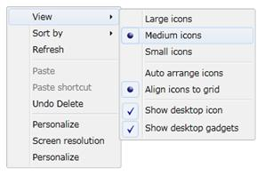

ContextMenuItemAdv provides a feature for selecting several items. ContextMenuAdv items can be checked by setting the IsCheckable property to "true". You can change the icon type (Radio Button or Check Box) using the CheckIcon property.
When we set the CheckIcon property as a RadioButton, then the MenuItems are grouped based on the GroupName and the end – user can select only one Item in that group.
|
[XAML] <Grid x:Name="LayoutRoot" Background="White"> <shared:ContextMenuAdvService.ContextMenuAdv> <shared:ContextMenuAdv> <shared:ContextMenuItemAdv Header="View"> <shared:ContextMenuItemAdv Header="Large icons" IsCheckable="True" CheckIconType="RadioButton" GroupName="RadioButtonGroup1"/> <shared:ContextMenuItemAdv Header="Medium icons" IsCheckable="True" CheckIconType="RadioButton" IsChecked="True" GroupName="RadioButtonGroup1"/> <shared:ContextMenuItemAdv Header="Small icons" IsCheckable="True" CheckIconType="RadioButton" GroupName="RadioButtonGroup1"/> <shared:SeparatorAdv/> <shared:ContextMenuItemAdv Header="Auto arrange icons" IsCheckable="True" CheckIconType="RadioButton" GroupName="RadioButtonGroup2"/> <shared:ContextMenuItemAdv Header="Align icons to grid" IsCheckable="True" CheckIconType="RadioButton" IsChecked="True" GroupName="RadioButtonGroup2"/> <shared:SeparatorAdv/> <shared:ContextMenuItemAdv Header="Show desktop icon" IsCheckable="True" CheckIconType="CheckBox" IsChecked="True"/> <shared:ContextMenuItemAdv Header="Show desktop gadgets" IsCheckable="True" CheckIconType="CheckBox" IsChecked="True"/> </shared:ContextMenuItemAdv>
<shared:ContextMenuItemAdv Header="Sort by"> <shared:ContextMenuItemAdv Header="Name"/> <shared:ContextMenuItemAdv Header="Size"/> <shared:ContextMenuItemAdv Header="Item type"/> <shared:ContextMenuItemAdv Header="Date modified"/> </shared:ContextMenuItemAdv> <shared:ContextMenuItemAdv Header="Refresh"/> <shared:SeparatorAdv/> <shared:ContextMenuItemAdv Header="Paste" IsEnabled="False"/> <shared:ContextMenuItemAdv Header="Paste shortcut" IsEnabled="False"/> <shared:ContextMenuItemAdv Header="Undo Delete"/> <shared:SeparatorAdv/> <shared:ContextMenuItemAdv Header="Personalize"/> <shared:ContextMenuItemAdv Header="Screen resolution"/> <shared:ContextMenuItemAdv Header="Personalize"/> </shared:ContextMenuAdv> </shared:ContextMenuAdvService.ContextMenuAdv> </Grid> |

Figure 890: ContextMenu – CheckBox and RadioButton support
In the above example, the Large icons, Medium icons, Small icons items are grouped under RadioButtonGroup1 and Auto arrange icons, Align icons to grid are grouped under RadioButtonGroup2. You can check only one item in the group.